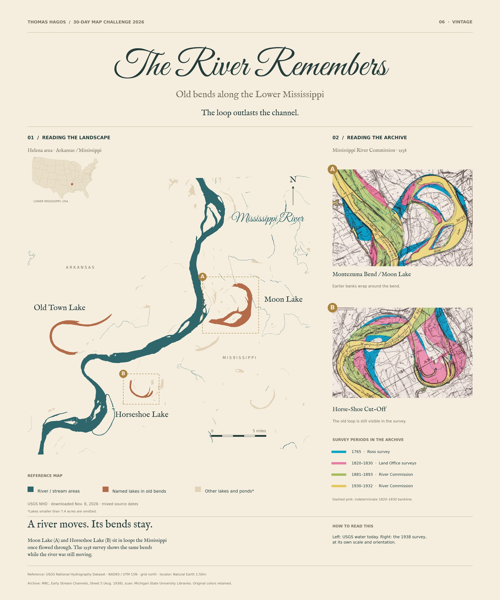

30-Day Map Challenge / Day 06 / Vintage
The River Remembers
Old bends along the Lower Mississippi
A river moves. But it doesn’t erase every trace. Near Helena, Arkansas, lakes still hold the curves of old Mississippi River bends.


The landscape
The loop outlasts the channel.
Moon Lake is an oxbow of the Mississippi. The shape of the old bend remains beside a river that now follows a different path.
On the reference map, teal marks river and stream areas. Rust marks the three named lakes in old bends; other lakes and ponds are pale tan. Boxes A (Moon Lake) and B (Horseshoe Lake) match the two archive details. The lake layer omits features smaller than about 7.4 acres.
The archive
A different way to read a river.
The two details come from the River Commission’s 1938 Early Stream Channels map. Its legend records surveys from 1765, 1820–1830, 1881–1893 and 1930–1932. Original channel colors are retained, including dashed pink for an indeterminate 1820–1830 bankline.
The reference map and archive have different scales and orientations. The scan has not been aligned to USGS geometry, so this is a visual comparison—not a measurement of channel movement.
Sources and the small print
- USGS National Hydrography Dataset, saved November 8, 2026. Features have mixed source dates; this is not a survey of today’s water level. NAD83 / UTM zone 15N; five-mile reference scale; grid north.
- Complete 1938 archival sheet, including its original legend and scale. Federal government map, public domain in the U.S. Library of Congress account of the series.
- Mississippi Department of Wildlife, Fisheries, and Parks confirms Moon Lake’s oxbow origin. No exact cutoff year is inferred here.
- Natural Earth supplies the small U.S. locator. Source records, geometry selections, licenses and checksums are in the source manifest.
No migration rates, exact historical alignments or complete reconstructed channels are claimed. NHD water areas do not include every small stream, pond or dry former channel. The map is for geographic interpretation, not navigation.